คู่มือใช้งานเครื่องมือ · ระดับ Free
ประสิทธิภาพกังหันไอน้ำ
Steam Turbine Efficiency Calculator
FREE
สำหรับช่างเทคนิคที่เพิ่งเริ่มงาน — อ่านแล้วทำตามได้เอง
ใช้เวลาฝึกประมาณ 45 นาที
เคสตัวอย่าง: โรงงาน A กังหันความดันย้อนกลับ 50 t/h 42 → 4 barA
อ.หนึ่ง กลับทวี / Aj. Nueng Klubtavee
tripleeenergytools.com
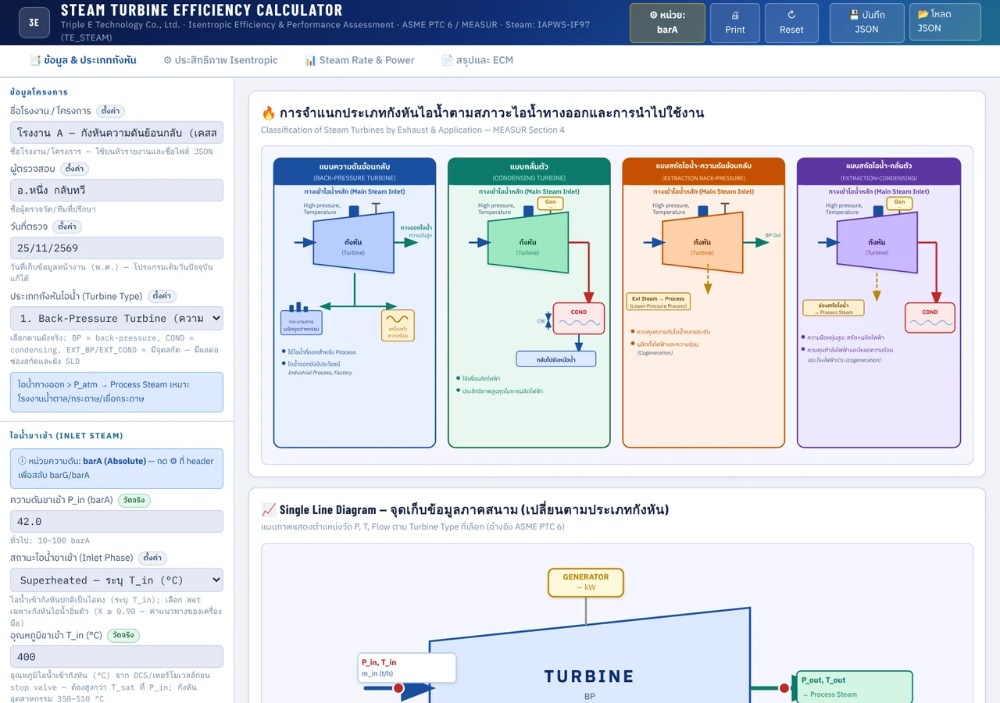
หน้าจอเครื่องมือ — เปิดได้จากเมนู Free ของเว็บไซต์
รุ่นเครื่องมือ: Free commit b245301 · จับภาพ 17 พ.ย. 2569 · คู่มือ Rev00
เครื่องมือนี้ตอบคำถามอะไร
คู่มือใช้งาน · ประสิทธิภาพกังหันไอน้ำ (Steam Turbine Efficiency Calculator) · ระดับ Free
2 / 27
| คำถามหน้างาน | ดูที่ | เคสโรงงาน A ได้ |
|---|---|---|
| กังหันทำงานดีแค่ไหน เทียบกับกังหันสมบูรณ์ | แท็บ ② ประสิทธิภาพ Isentropic | η_is 83.4 % |
| ไอน้ำ 1 kg ให้งานเท่าไร | แท็บ ② · ③ | 446.8 จาก 535.6 kJ/kg |
| ผลิตไฟ 1 kWh ใช้ไอน้ำกี่ kg | แท็บ ③ Steam Rate | ASR 8.057 kg/kWh |
| ได้กำลังเพลาและไฟฟ้าเท่าไร | แท็บ ③ Power Balance | 6206 kW เพลา · 5929 kW ไฟฟ้า |
| ต่ำกว่าพิกัดแค่ไหน | แท็บ ③ เทียบ Design | η -1.6% · กำลัง -8.8% |
| มีมาตรการอะไรให้ทำต่อ | แท็บ ④ สรุปและ ECM | 6 มาตรการ (ค่าแนวทาง) |
💡 เคล็ดลับ
ทุกค่าสมบัติไอน้ำคำนวณตาม IAPWS-IF97 — ต้องกดปุ่ม คำนวณประสิทธิภาพ ทุกครั้งที่แก้ค่า
แผนที่หน้าจอ
คู่มือใช้งาน · ประสิทธิภาพกังหันไอน้ำ (Steam Turbine Efficiency Calculator) · ระดับ Free
3 / 27
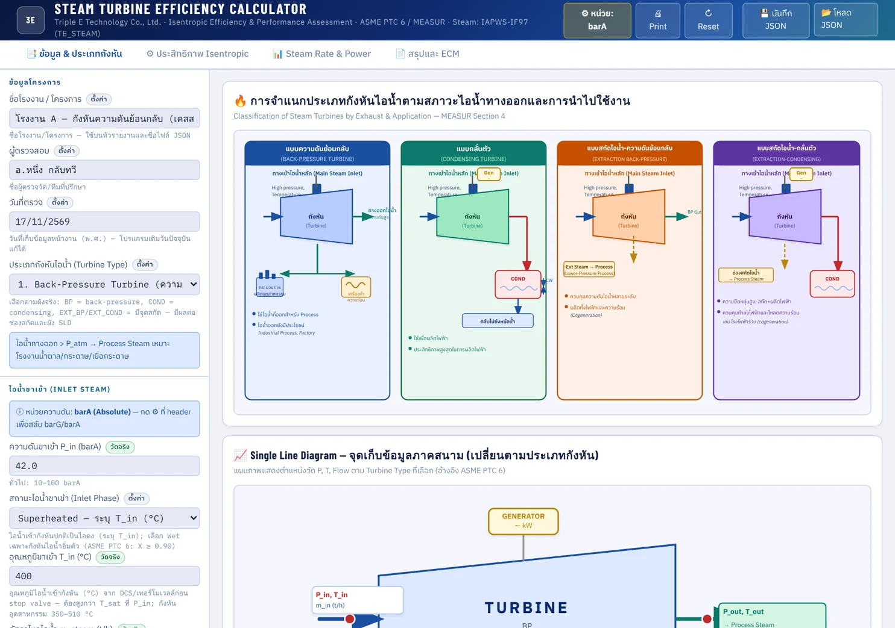
1
2
3
4
5
1
ปุ่มหน่วยความดัน barA ↔ barG
2
บันทึก / โหลดไฟล์ JSON
3
4 แท็บผล: ข้อมูล · ประสิทธิภาพ · Steam Rate · สรุปและ ECM
4
แถบข้าง — ช่องกรอกทั้งหมด และปุ่มคำนวณ (ด้านล่าง)
5
ผังประเภทกังหัน 4 แบบ
กรอกที่แถบข้าง → กด คำนวณประสิทธิภาพ → ดูผลทีละแท็บ
ป้ายเล็กข้างช่องกรอกบอกชนิดค่า: วัดจริง · ออกแบบ · ตั้งค่า
💡 เคล็ดลับ
ปุ่ม Reset โหลดหน้าใหม่และล้างค่าที่กรอก — บันทึก JSON ไว้ก่อนถ้ายังต้องใช้
เปิดบนมือถือ และสลับภาษา
คู่มือใช้งาน · ประสิทธิภาพกังหันไอน้ำ (Steam Turbine Efficiency Calculator) · ระดับ Free
4 / 27
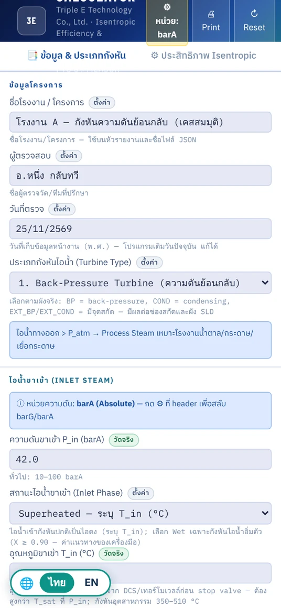
ใช้บนมือถือได้ — แถบข้างเลื่อนขึ้นไปอยู่บน แท็บผลอยู่ถัดลงมา
ปุ่ม ไทย | EN ลอยอยู่ด้านล่าง กดสลับภาษาได้ ค่าที่กรอกไม่หาย
ผังและตารางกว้าง เลื่อนซ้าย-ขวาได้
งานหน้างานควรกรอกบนมือถือแล้วบันทึก JSON ไปเปิดต่อบนคอมพิวเตอร์
⚠️ ระวัง
ค่าตั้งต้นของความดันเป็น barA (สัมบูรณ์) — เกจหน้างานอ่านเป็น barG ต้องสลับหน่วยหรือบวก 1.013
คำศัพท์ 8 คำที่ต้องรู้ก่อนเริ่ม
คู่มือใช้งาน · ประสิทธิภาพกังหันไอน้ำ (Steam Turbine Efficiency Calculator) · ระดับ Free
5 / 27
| คำ | ความหมายแบบสั้น | จำง่าย ๆ |
|---|---|---|
| barA · barG | barA = ความดันสัมบูรณ์ · barG = ความดันที่เกจอ่าน | barA = barG + 1.013 |
| h (เอนทัลปี) | พลังงานในไอน้ำ 1 kg (kJ/kg) | h ลดลง = ไอน้ำให้งาน |
| s (เอนโทรปี) | สมบัติที่คงที่เมื่อขยายตัวแบบสมบูรณ์ | ใช้หา h_out,isen |
| Isentropic | การขยายตัวในอุดมคติ ไม่มีการสูญเสีย | กังหันสมบูรณ์ |
| η_is | งานจริง ÷ งานของกังหันสมบูรณ์ | ยิ่งสูงยิ่งดี |
| TSR · ASR | ไอน้ำต่อ kWh: ทางทฤษฎี · จริง (kg/kWh) | ASR = TSR ÷ η_is |
| W_shaft · P_elec | กำลังที่เพลากังหัน · ไฟฟ้าที่เครื่องกำเนิดจ่าย | P_elec = W × η_mech × η_gen |
| BP · COND · EXT | กังหันความดันย้อนกลับ · กลั่นตัว · มีจุดสกัดไอน้ำ | เลือกตามผังจริง |
💡 เคล็ดลับ
ไอดง (Superheated) = ไอที่ร้อนกว่าจุดเดือดของความดันนั้น — Method 2 ใช้ได้เฉพาะเมื่อไอขาออกยังเป็นไอดง
เตรียมข้อมูลก่อนเริ่ม
คู่มือใช้งาน · ประสิทธิภาพกังหันไอน้ำ (Steam Turbine Efficiency Calculator) · ระดับ Free
6 / 27
| ข้อมูล | แหล่ง | โรงงาน A |
|---|---|---|
| ความดัน / อุณหภูมิไอน้ำเข้า | เกจ / เทอร์โมเวลล์หน้า stop valve หรือ DCS | 42.0 barA · 400 °C |
| อัตราไหลไอน้ำเข้า | steam flow meter / DCS (เฉลี่ยช่วงทดสอบ) | 50.0 t/h |
| ความดัน / อุณหภูมิไอน้ำออก | เกจและเทอร์โมเวลล์ท่อไอออก | 4.0 barA · 155 °C |
| กำลังไฟฟ้า (ใช้ Method 3) | kWh meter / power meter (เฉลี่ยช่วงเดียวกัน) | 5930 kW |
| η เครื่องกำเนิด · η กลไก | nameplate · test certificate | 96.5 % · 99.0 % |
| พิกัดกำลัง · η ออกแบบ | nameplate · datasheet ผู้ผลิต | 6500 kW · 85 % |
⚠️ ระวัง
เก็บทุกค่าในช่วงเวลาเดียวกัน ขณะโหลดคงที่ — ค่าคนละช่วงเวลาทำให้ η ผิดได้มาก
ขั้นที่ 1
แถบข้าง: ข้อมูลโครงการและประเภทกังหัน
คู่มือใช้งาน · ประสิทธิภาพกังหันไอน้ำ (Steam Turbine Efficiency Calculator) · ระดับ Free
7 / 27
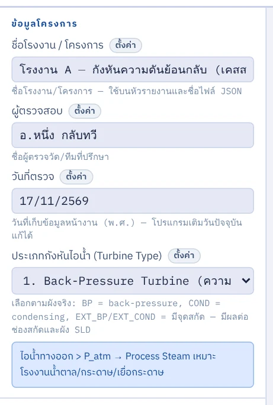
1
2
3
4
1
ชื่อโรงงาน / โครงการ (ขึ้นหัวรายงาน)
2
วันที่ตรวจ (เติมวันนี้ให้อัตโนมัติ แก้ได้)
3
ประเภทกังหัน — เลือกตามผังจริง
4
คำอธิบายประเภทที่เลือก
โรงงาน A: Back-Pressure — ไอขาออกยังมีความดัน ส่งต่อไปใช้ในกระบวนการ
เลือกประเภทที่มีจุดสกัด ช่องกรอกจุดสกัด 1–3 จะปรากฏ และผังจุดวัดเปลี่ยนตาม
ขั้นที่ 2
แถบข้าง: ไอน้ำขาเข้าและขาออก
คู่มือใช้งาน · ประสิทธิภาพกังหันไอน้ำ (Steam Turbine Efficiency Calculator) · ระดับ Free
8 / 27
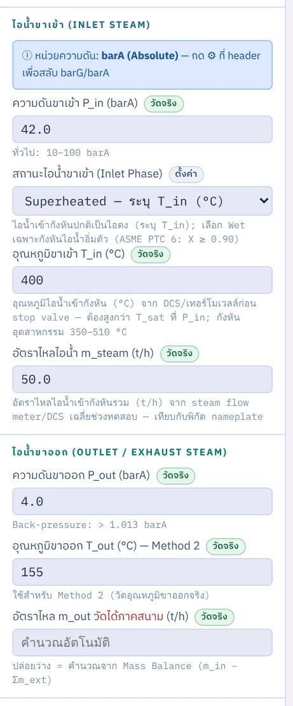
1
2
3
4
5
6
7
8
1
หน่วยความดันที่ใช้อยู่: barA
2
P_in 42.0 barA
3
สถานะไอขาเข้า: ไอดง (ระบุ T_in) หรือไอเปียก (ระบุความแห้ง)
4
T_in 400 °C
5
อัตราไหล 50.0 t/h
6
P_out 4.0 barA
7
T_out 155 °C (ใช้กับ Method 2)
8
m_out — ปล่อยว่างให้คำนวณจากสมดุลมวล
ไอขาเข้า 400 °C สูงกว่าจุดเดือดที่ 42.0 barA (253.3 °C) → เป็นไอดง
ไอเปียกขาเข้า: เครื่องมือรับความแห้ง ≥ 0.90 — เป็นค่าแนวทางของเครื่องมือ
ขั้นที่ 3
แถบข้าง: วิธีคำนวณ พิกัด และปุ่มคำนวณ
คู่มือใช้งาน · ประสิทธิภาพกังหันไอน้ำ (Steam Turbine Efficiency Calculator) · ระดับ Free
9 / 27
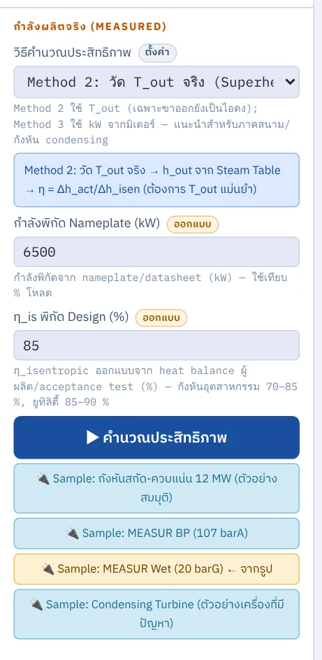
1
2
3
4
5
6
1
วิธีคำนวณ: Method 2 (วัด T_out) หรือ Method 3 (วัด kW)
2
คำอธิบายวิธีที่เลือก
3
กำลังพิกัด 6500 kW
4
η_is ออกแบบ 85 %
5
คำนวณประสิทธิภาพ — กดทุกครั้งหลังแก้ค่า
6
ปุ่มโหลดตัวอย่าง (ค่าสมมุติ)
โรงงาน A ใช้ Method 2 — ไอขาออกเป็นไอดง และมีเทอร์โมเวลล์ที่ท่อไอออก
แก้ค่าแล้วไม่กดคำนวณ จะมีแถบเหลือง "ค่า input เปลี่ยน — กด คำนวณ อีกครั้ง"
💡 เคล็ดลับ
ปุ่มตัวอย่างใช้ดูวิธีกรอกกังหันแบบอื่น — กดแล้วค่าที่กรอกเดิมถูกแทนที่
ขั้นที่ 4
แท็บ ① ข้อมูล: ผังจุดวัด และข้อมูลพิกัด
คู่มือใช้งาน · ประสิทธิภาพกังหันไอน้ำ (Steam Turbine Efficiency Calculator) · ระดับ Free
10 / 27
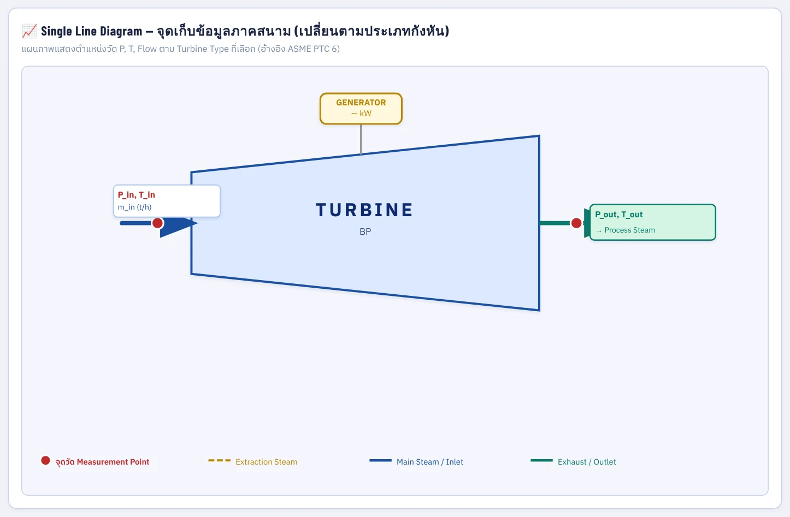
1
1
ผังจุดวัด — จุดแดงคือจุดที่ต้องอ่าน P · T · อัตราไหล · kW (เปลี่ยนตามประเภทกังหัน)
ใช้ผังนี้วางแผนว่าต้องอ่านค่าที่จุดใดบ้างก่อนลงพื้นที่
ถัดลงไปในแท็บนี้: การ์ด Nameplate / Design (ยี่ห้อ ความดัน อุณหภูมิ รอบพิกัด) และตารางไอน้ำอิ่มตัว
ตารางไอน้ำอิ่มตัว: ที่ 4.0 barA จุดเดือด 143.6 °C — ไอขาออก 155 °C จึงยังเป็นไอดง
ขั้นที่ 5
แท็บ ② Method 2: ผลและการแทนค่า
คู่มือใช้งาน · ประสิทธิภาพกังหันไอน้ำ (Steam Turbine Efficiency Calculator) · ระดับ Free
11 / 27
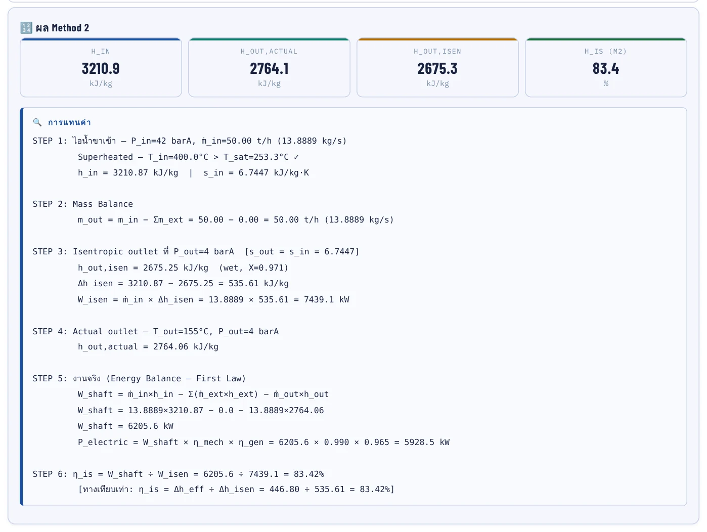
1
2
3
4
5
1
h_in 3210.9 kJ/kg
2
h_out,actual 2764.1 (จาก P_out และ T_out ที่วัด)
3
h_out,isen 2675.3 (ขยายตัวสมบูรณ์ ที่ s เท่าเดิม)
4
η_is 83.4 %
5
การแทนค่าทีละขั้น — ใช้ทวนกับมือ
ไอขยายตัวแบบสมบูรณ์จะเปียกเล็กน้อย (X = 0.971) แต่ไอจริงยังเป็นไอดง เพราะมีการสูญเสียเป็นความร้อน
บรรทัด P_electric: ไฟฟ้า = W_shaft × η_mech × η_gen = 6,205.6 × 0.990 × 0.965 = 5,928.5 kW
💡 เคล็ดลับ
กดแถบ Method 2 ด้านบนของแท็บ ② เพื่อดูการ์ดนี้ — แถบ Method 1 แสดงช่วง η ทั่วไปจากผู้ผลิต
ทวนผลด้วยมือ: โรงงาน A
คู่มือใช้งาน · ประสิทธิภาพกังหันไอน้ำ (Steam Turbine Efficiency Calculator) · ระดับ Free
12 / 27
| ค่า | สูตร | แทนค่าจากหน้าจอ | ผล |
|---|---|---|---|
| งานจริง/kg | h_in − h_out,actual | 3210.9 − 2764.1 | 446.8 kJ/kg |
| งานสมบูรณ์/kg | h_in − h_out,isen | 3210.9 − 2675.3 | 535.6 kJ/kg |
| η_is | งานจริง ÷ งานสมบูรณ์ | 446.8 ÷ 535.6 | 83.4 % |
| W_shaft | ṁ (kg/s) × งานจริง | 13.8889 × 446.8 | 6206 kW |
| P_elec | W_shaft × η_mech × η_gen | 6206 × 0.990 × 0.965 | 5,929 kW |
| TSR · ASR | 3,600 ÷ Δh | 3,600 ÷ 535.6 · 3,600 ÷ 446.8 | 6.721 · 8.057 |
ṁ = 50.0 t/h ÷ 3.6 = 13.8889 kg/s
ค่า h ทั้งสามตัวทวนกับตารางไอน้ำ IAPWS-IF97 ได้ตรงทุกหลัก
✓ ผ่าน
คิดได้ตรงกับหน้าจอ = เข้าใจที่มาของตัวเลข — ใช้ตรวจเมื่อผลดูแปลก
ลองเปลี่ยนค่า (What-if): อุณหภูมิไอน้ำ
คู่มือใช้งาน · ประสิทธิภาพกังหันไอน้ำ (Steam Turbine Efficiency Calculator) · ระดับ Free
13 / 27
| เปลี่ยนค่า | h_out,actual | η_is (%) | ไฟฟ้า (kW) | ASR (kg/kWh) |
|---|---|---|---|---|
| T_out 150 °C | 2752.8 | 85.5 | 6078 | 7.859 |
| T_out 155 °C (โรงงาน A) | 2764.1 | 83.4 | 5929 | 8.057 |
| T_out 165 °C | 2786.2 | 79.3 | 5635 | 8.477 |
| T_out 170 °C | 2797.1 | 77.3 | 5490 | 8.700 |
| T_in 380 °C (T_out 155 °C) | 2764.1 | 77.0 | 5291 | 9.028 |
ทำเอง: แก้ T_out ในแถบข้าง → กดคำนวณ → อ่าน η → แก้กลับ
T_out ต่างกันแค่ 5 °C η เปลี่ยนราว 2 จุด — เทอร์โมเวลล์ขาออกต้องแม่น สอบเทียบก่อนวัด
ลดอัตราไหลเป็น 40 t/h ที่อุณหภูมิเดิม: η เท่าเดิม 83.4 % แต่ไฟฟ้าเหลือ 4743 kW
⚠️ ระวัง
ไอขาออกร้อนขึ้นที่ความดันเดิม = กังหันดึงพลังงานได้น้อยลง (η ต่ำลง)
ขั้นที่ 6
Method 3: ใช้กำลังไฟฟ้าที่วัดได้
คู่มือใช้งาน · ประสิทธิภาพกังหันไอน้ำ (Steam Turbine Efficiency Calculator) · ระดับ Free
14 / 27
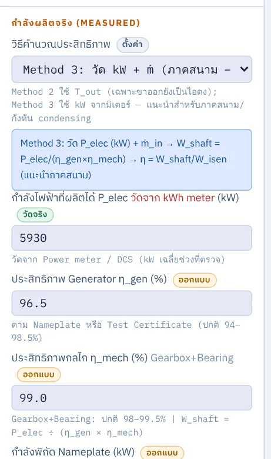
1
2
3
4
1
เลือก Method 3
2
กำลังไฟฟ้าจากมิเตอร์ 5930 kW
3
η_gen 96.5 %
4
η_mech 99.0 % (เกียร์ + แบริ่ง)
ช่องทั้งสามปรากฏเมื่อเลือก Method 3 เท่านั้น
Method 3 ไม่ต้องใช้ T_out — ใช้ได้แม้ไอขาออกเปียก (กังหันกลั่นตัว)
ไฟฟ้าต้องเป็นค่าเฉลี่ยช่วงเวลาเดียวกับที่อ่านความดันและอัตราไหล
ขั้นที่ 7
แท็บ ② Method 3: ผล
คู่มือใช้งาน · ประสิทธิภาพกังหันไอน้ำ (Steam Turbine Efficiency Calculator) · ระดับ Free
15 / 27
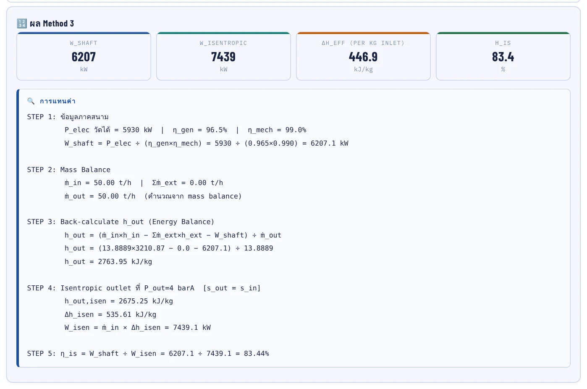
1
2
3
4
1
W_shaft 6207 kW = ไฟฟ้า ÷ (η_gen × η_mech)
2
W_isentropic 7439 kW
3
η_is 83.4 %
4
การแทนค่า: P_elec ÷ (η_gen×η_mech) = 5930 ÷ (0.965×0.990) = 6207.1 kW
โรงงาน A ได้ 83.4 % เท่ากับ Method 2 — สองวิธีตรงกัน แปลว่าค่าที่วัดสอดคล้องกัน
ถ้าสองวิธีต่างกันมาก ให้ตรวจเทอร์โมเวลล์ขาออก มิเตอร์ไฟฟ้า และ flow meter
⚠️ ระวัง
กรอกไฟฟ้าผิดเป็น 9,200 kW: η_is = 129.5 % ขึ้นป้าย ⛔ ตรวจสอบ — η เกิน 100 % เป็นไปไม่ได้
ขั้นที่ 8
แท็บ ③ Steam Rate: TSR และ ASR
คู่มือใช้งาน · ประสิทธิภาพกังหันไอน้ำ (Steam Turbine Efficiency Calculator) · ระดับ Free
16 / 27
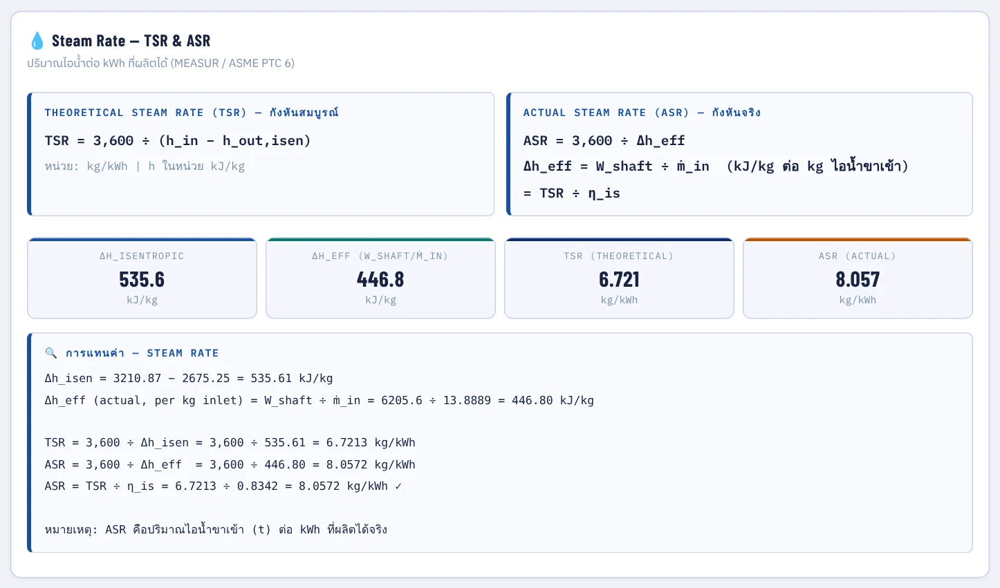
1
2
3
4
1
Δh_isentropic 535.6 kJ/kg
2
Δh_eff 446.8 kJ/kg (งานเพลาต่อไอน้ำเข้า 1 kg)
3
TSR 6.721 kg/kWh — กังหันสมบูรณ์
4
ASR 8.057 kg/kWh — กังหันจริง
ASR ต่ำ = ใช้ไอน้ำน้อยต่อไฟฟ้า 1 kWh — ใช้ติดตามสมรรถนะรายเดือน
ASR ในเครื่องมือคิดต่อ kWh ที่เพลา — ต่อ kWh ไฟฟ้าจะสูงกว่าเล็กน้อย
ขั้นที่ 9
แท็บ ③ Power Balance
คู่มือใช้งาน · ประสิทธิภาพกังหันไอน้ำ (Steam Turbine Efficiency Calculator) · ระดับ Free
17 / 27
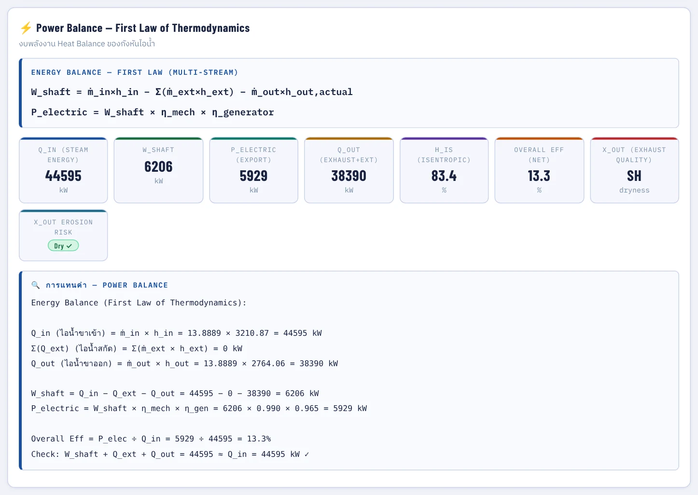
1
2
3
4
5
6
1
Q_in 44595 kW (พลังงานในไอน้ำเข้า)
2
W_shaft 6206 kW
3
P_electric 5929 kW
4
Q_out 38390 kW (ไอออกไปกระบวนการ)
5
Overall 13.3 % = ไฟฟ้า ÷ Q_in
6
X_out = SH (Dry ✓) — ไอขาออกแห้ง
Q_in = W_shaft + Q_out — ไอที่ออกไปยังมีพลังงานเกือบทั้งหมด และถูกใช้ต่อในกระบวนการ
Overall 13.3 % จึงไม่ใช่ตัวชี้วัดของกังหันความดันย้อนกลับ — ใช้ η_is และ ASR
💡 เคล็ดลับ
X_out < 1 (ไอเปียก) ในกังหันกลั่นตัว: ช่องความเสี่ยงบอกระดับการกัดกร่อนใบกังหันช่วงท้าย
ขั้นที่ 10
แท็บ ③ เทียบกับค่าออกแบบ
คู่มือใช้งาน · ประสิทธิภาพกังหันไอน้ำ (Steam Turbine Efficiency Calculator) · ระดับ Free
18 / 27
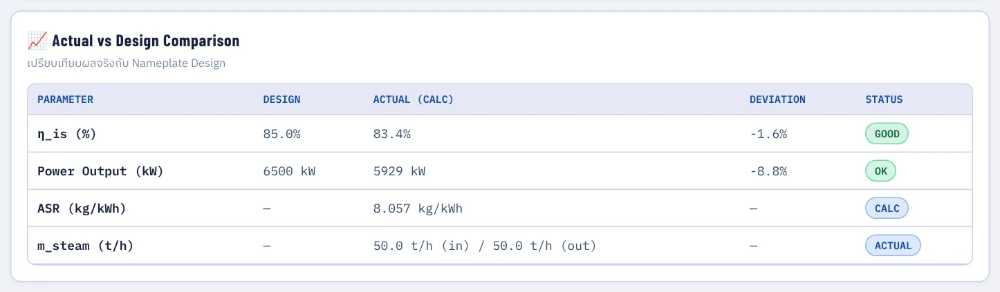
1
2
3
1
η_is: 85.0% → 83.4% = -1.6%
2
กำลัง: 6500 kW → 5929 kW = -8.8%
3
ป้ายสถานะ: GOOD
η ต่ำกว่าออกแบบเพียง 1.6 จุด แต่กำลังต่ำกว่าพิกัด 8.8 % — ส่วนใหญ่เพราะเดินที่ไอน้ำ 50.0 t/h ไม่ใช่เพราะกังหันเสื่อม
กำลังที่ต่ำกว่าพิกัดต้องดูคู่กับอัตราไหล — อย่าสรุปจากกำลังอย่างเดียว
💡 เคล็ดลับ
ช่องพิกัดต้องเป็นค่าของกังหันเครื่องนี้ — พิกัดผิดเครื่องทำให้เทียบผิดทั้งตาราง
ขั้นที่ 11
แท็บ ④ สรุปผล
คู่มือใช้งาน · ประสิทธิภาพกังหันไอน้ำ (Steam Turbine Efficiency Calculator) · ระดับ Free
19 / 27
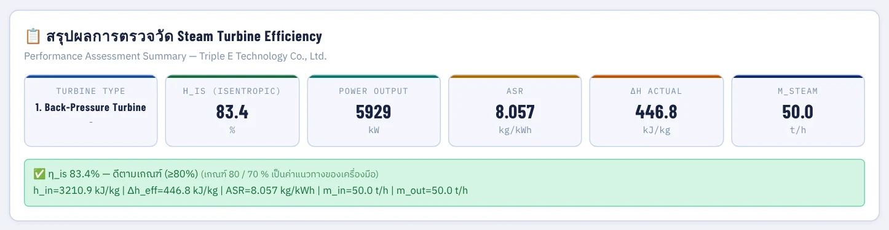
1
2
3
4
1
η_is 83.4 %
2
กำลังไฟฟ้า 5929 kW
3
ASR 8.057 kg/kWh
4
ข้อสรุป: ✅ η_is 83.4% — ดีตามเกณฑ์
เกณฑ์ 80 / 70 % ในข้อสรุปเป็นค่าแนวทางของเครื่องมือ (หน้าจอระบุไว้)
Export CSV หรือ Print PDF ได้จากการ์ดถัดลงไปในแท็บนี้
ขั้นที่ 12
แท็บ ④ มาตรการอนุรักษ์พลังงาน (ECM)
คู่มือใช้งาน · ประสิทธิภาพกังหันไอน้ำ (Steam Turbine Efficiency Calculator) · ระดับ Free
20 / 27
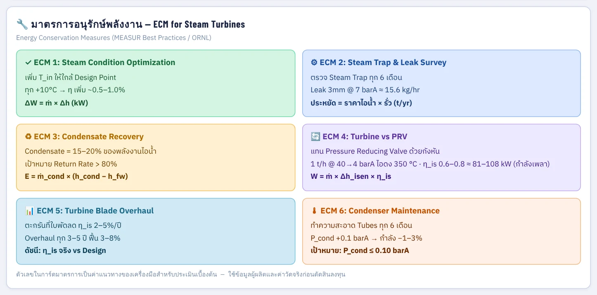
1
2
3
4
1
ECM 1: ปรับสภาวะไอน้ำเข้าให้ใกล้ค่าออกแบบ
2
ECM 2: ไอรั่วรู 3 mm ที่ 7 barA ≈ 15.6 kg/h
3
ECM 4: กังหันแทนวาล์วลดความดัน ≈ 81–108 kW ต่อไอน้ำ 1 t/h
4
ข้อความกำกับ: ตัวเลขในการ์ดเป็นค่าแนวทาง
ECM 4 คิดจากไอดง 350 °C 40 → 4 barA: Δh_isen 484.9 kJ/kg × η 0.6–0.8 ÷ 3.6 = 81–108 kW (ทวน IAPWS-IF97 ได้ 80.8–107.8)
โรงงานที่ลดความดันไอน้ำด้วยวาล์ว 10 t/h: ได้กำลังเพลาราว 0.8–1.1 MW ถ้าใช้กังหันแทน
ใช้ข้อมูลผู้ผลิตและค่าวัดจริงก่อนตัดสินลงทุน
⚠️ ระวัง
ตัวเลขในการ์ด ECM เป็นค่าแนวทางสำหรับประเมินเบื้องต้น ไม่ใช่ผลประหยัดของโรงงาน
กล่องเตือน: ไอขาออกไม่ใช่ไอดง
คู่มือใช้งาน · ประสิทธิภาพกังหันไอน้ำ (Steam Turbine Efficiency Calculator) · ระดับ Free
21 / 27
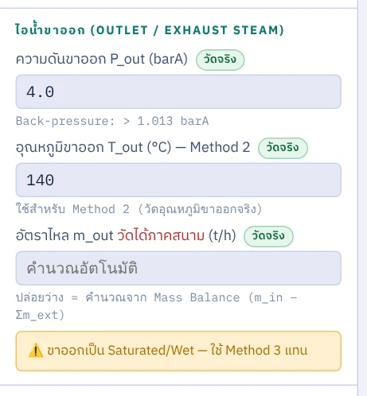
1
2
1
กรอก T_out 140 °C — ต่ำกว่าจุดเดือดที่ 4.0 barA (143.6 °C)
2
กล่องเหลือง: ขาออกเป็น Saturated/Wet — ใช้ Method 3 แทน
เมื่อ T_out ≤ จุดเดือด + 1 °C เครื่องมือหันไปใช้กำลังไฟฟ้า (แบบ Method 3) ให้อัตโนมัติ
โรงงาน A จึงยังได้ η 83.4 % จากไฟฟ้า 5930 kW — ไม่ได้มาจาก T_out
อุณหภูมิไอเปียกเท่ากับจุดเดือดเสมอ ใช้หา h ไม่ได้ — ต้องใช้กำลังไฟฟ้า
⚠️ ระวัง
เห็นกล่องเหลืองนี้ ให้เปลี่ยนเป็น Method 3 และตรวจว่าช่องกำลังไฟฟ้าเป็นค่าที่วัดจริง
สัญญาณเตือนอื่น ๆ และวิธีแก้
คู่มือใช้งาน · ประสิทธิภาพกังหันไอน้ำ (Steam Turbine Efficiency Calculator) · ระดับ Free
22 / 27
| เห็นอะไร | สาเหตุที่พบบ่อย | ทำอย่างไร |
|---|---|---|
| η เกิน 100 % · ป้าย ⛔ ตรวจสอบ | ไฟฟ้า อัตราไหล หรือหน่วยความดันผิด | ตรวจค่าที่กรอกทีละช่อง |
| กล่อง Mass Balance | m_out + ไอสกัด ≠ ไอเข้า | ปล่อย m_out ว่าง หรือแก้ค่าที่วัด |
| แถบเหลือง "ค่า input เปลี่ยน" | แก้ค่าแล้วยังไม่กดคำนวณ | กด คำนวณประสิทธิภาพ |
| η ต่ำผิดปกติ ทั้งที่เครื่องปกติ | เทอร์โมเวลล์ขาออกอ่านสูงเกิน | ทวนด้วย Method 3 |
| ความแห้งไอเข้า < 0.90 | ไอเปียกเกินค่าแนวทางของเครื่องมือ | ตรวจ separator / ท่อระบายน้ำ |
ตัวอย่าง: กรอกไฟฟ้า 9,200 kW กับไอน้ำ 50.0 t/h → η 129.5 % — เป็นไปไม่ได้
กดปุ่มหน่วยเป็น barG: ช่อง P_in แปลงเป็น 40.98675 barG ให้เอง ผล η ยังเป็น 83.4 %
ข้อจำกัดของเครื่องมือ
คู่มือใช้งาน · ประสิทธิภาพกังหันไอน้ำ (Steam Turbine Efficiency Calculator) · ระดับ Free
23 / 27
| เรื่อง | ข้อจำกัด | ทำอย่างไร |
|---|---|---|
| Method 2 | ใช้ได้เฉพาะไอขาออกเป็นไอดง | กังหันกลั่นตัวใช้ Method 3 |
| ความแม่นของ T_out | 5 °C ทำให้ η ต่างราว 2 จุด | สอบเทียบเทอร์โมเวลล์ก่อนวัด |
| สภาวะคงที่ | สูตรสมดุลพลังงานใช้กับโหลดคงที่ | เก็บค่าเฉลี่ยช่วงเวลาเดียวกันขณะโหลดคงที่ |
| เกณฑ์ 80 / 70 % | ค่าแนวทางของเครื่องมือ ไม่ใช่มาตรฐาน | เทียบกับ η ออกแบบของเครื่อง |
| การ์ด ECM | ค่าแนวทางสำหรับประเมินเบื้องต้น | ใช้ข้อมูลผู้ผลิตก่อนลงทุน |
| การทดสอบรับรอง | ไม่ใช่การทดสอบตาม ASME PTC 6 เต็มรูปแบบ | งานรับประกันสมรรถนะใช้วิธีทดสอบตามมาตรฐาน |
⚠️ ระวัง
ผลของเครื่องมือเป็นการประเมินหน้างาน — ระบุวิธี (Method 2 / 3) และช่วงเวลาที่เก็บข้อมูลในรายงานทุกครั้ง
ข้อผิดพลาดที่พบบ่อย
คู่มือใช้งาน · ประสิทธิภาพกังหันไอน้ำ (Steam Turbine Efficiency Calculator) · ระดับ Free
24 / 27
✗ กรอก barG ในช่อง barA
✓ ค่าตั้งต้นเป็น barA — สลับหน่วยหรือบวก 1.013
✗ แก้ค่าแล้วไม่กดคำนวณ
✓ ผลยังเป็นของค่าเดิม — ดูแถบเหลือง
✗ ใช้ Method 2 กับไอเปียก
✓ ไอเปียก T = จุดเดือด หา h ไม่ได้ — ใช้ Method 3
✗ ค่าวัดคนละช่วงเวลา
✓ ความดัน อุณหภูมิ อัตราไหล ไฟฟ้า ต้องช่วงเดียวกัน
✗ ลืม η_mech
✓ ไฟฟ้า = W_shaft × η_mech × η_gen
✗ ใช้ Overall % ตัดสินกังหัน BP
✓ ไอออกถูกใช้ต่อ — ดู η_is และ ASR
✗ สรุปเสื่อมจากกำลังต่ำกว่าพิกัด
✓ ดูอัตราไหลไอน้ำประกอบเสมอ
✗ ใช้ตัวเลข ECM เป็นผลประหยัด
✓ การ์ด ECM เป็นค่าแนวทาง — คิดใหม่ด้วยข้อมูลโรงงาน
แบบฝึกหัด: โรงงาน B
คู่มือใช้งาน · ประสิทธิภาพกังหันไอน้ำ (Steam Turbine Efficiency Calculator) · ระดับ Free
25 / 27
| ข้อมูล | ค่า |
|---|---|
| ประเภท | Back-Pressure |
| ไอเข้า P_in · T_in · อัตราไหล | 32 barA · 380 °C · 30 t/h |
| ไอออก P_out · T_out | 3.5 barA · 165 °C |
| ไฟฟ้าที่วัด · η_gen · η_mech | 3,110 kW · 96.0 % · 99.0 % |
| พิกัด · η ออกแบบ | 3,500 kW · 82 % |
คำถาม — กรอกแล้วตอบ
1
Method 2: η_is ____ % · ASR ____
2
h_in ____ · h_out,isen ____ kJ/kg
3
Method 3: W_shaft ____ kW · η_is ____ %
4
กำลังต่ำกว่าพิกัด ____ %
💡 เคล็ดลับ
ทำ Method 2 ก่อน กดคำนวณ แล้วเปลี่ยนเป็น Method 3 กดคำนวณอีกครั้ง
เฉลยแบบฝึกหัด โรงงาน B
คู่มือใช้งาน · ประสิทธิภาพกังหันไอน้ำ (Steam Turbine Efficiency Calculator) · ระดับ Free
26 / 27
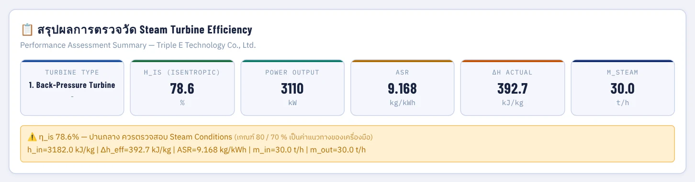
1) Method 2: η_is 78.5 % (FAIR) · ASR 9.176 kg/kWh · W_shaft 3269 kW
2) h_in 3182.0 · h_out,isen 2682.5 · h_out,actual 2789.7 kJ/kg
3) Method 3: W_shaft = 3,110 ÷ (0.960 × 0.990) = 3,272.3 kW · η_is 78.6 %
4) กำลัง 3110 kW ต่ำกว่าพิกัด -11.1% · η ต่ำกว่าออกแบบ -3.4%
✓ ผ่าน
สองวิธีได้ 78.5 % กับ 78.6 % ใกล้กัน = ค่าที่วัดสอดคล้องกัน · ภาพคือการ์ดสรุปผล (Method 3)
สรุป 1 หน้า (พิมพ์ติดไว้ข้างคอมพิวเตอร์)
คู่มือใช้งาน · ประสิทธิภาพกังหันไอน้ำ (Steam Turbine Efficiency Calculator) · ระดับ Free
27 / 27
1
แถบข้าง
ประเภทกังหัน → ตรวจหน่วย barA / barG
2
แถบข้าง
P · T · อัตราไหล ขาเข้า และ P · T ขาออก
3
แถบข้าง
เลือก Method 2 (ไอดง) หรือ 3 (มีไฟฟ้า) → กดคำนวณ
4
แท็บ ②
h_in · h_out · η_is · การแทนค่า
5
แท็บ ③
TSR · ASR · Power Balance · เทียบออกแบบ
6
แท็บ ④
ข้อสรุป · ECM (ค่าแนวทาง) · Export
อ่านผลแล้วตรวจ
☐
barA = barG + 1.013
☐
η_is = (h_in − h_out) ÷ (h_in − h_out,isen)
☐
ASR = 3,600 ÷ Δh_eff
☐
ไฟฟ้า = W × η_mech × η_gen
☐
กล่องเหลือง = ใช้ Method 3
อ.หนึ่ง กลับทวี / Aj. Nueng Klubtavee
tripleeenergytools.com
tripleeenergytools.com